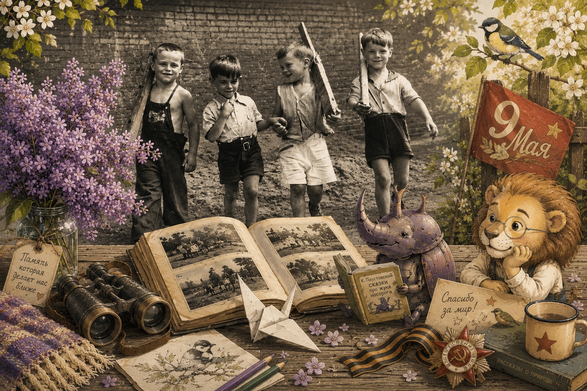

№002
Второй майский: жук, который прошёл войну, и другие способы провести длинные выходные
Солдатская сказка Паустовского, бумажный журавлик, семейный фотоальбом, прогулка на запах сирени, птицы майского вечера, «Каникулы Бонифация» и плед на дачу.
Обложка выпуска «Мама, я гуляю».
Этот выпуск выходит накануне 9 мая, и игнорировать дату глупо. Но и делать из выпуска парадную программу не хочется. Война и дети - сложная материя: большинство «детских» подач войны либо лакируют до плакатной красоты, либо травмируют до ночных кошмаров.
Хороший разговор про память возможен, но он короткий, тихий и идёт через одну книжку, одну фигурку из бумаги и один семейный фотоальбом, а не через три часа документальных кадров. Поэтому здесь два касания темы и несколько майских вещей, которые можно сделать без героизма.